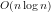
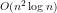
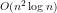

接尾辞配列(Suffix Array)とは，接尾辞(Suffix)を辞書順にソートしたものです．
例として「abracadabra$」という文字列を考えてみましょう． ($は文字列の終わりを表す特殊な文字) Suffixとは，文字列のある位置から末尾までの文字列のことです． 「abracadabra$」の場合，以下のように全部で11通りの Suffix があります．
| 開始位置 | Suffix |
|---|---|
| 0 | abracadabra$ |
| 1 | bracadabra$ |
| 2 | racadabra$ |
| 3 | acadabra$ |
| 4 | cadabra$ |
| 5 | adabra$ |
| 6 | dabra$ |
| 7 | abra$ |
| 8 | bra$ |
| 9 | ra$ |
| 10 | a$ |
| 11 | $ |
これを辞書順(ここではabc順)に並べ替えたものが Suffix Array です．
| 開始位置 | Suffix |
|---|---|
| 11 | $ |
| 10 | a$ |
| 7 | abra$ |
| 0 | abracadabra$ |
| 3 | acadabra$ |
| 5 | adabra$ |
| 8 | bra$ |
| 1 | bracadabra$ |
| 4 | cadabra$ |
| 6 | dabra$ |
| 2 | racadabra$ |
| 9 | ra$ |
Suffix は元の文字列と開始位置さえわかれば特定できるので， 表の開始位置の列だけ覚えておけば Suffix Array を表すことができます．
もっとも簡単なアルゴリズムは Suffix Array の定義をそのまま実装することです．
たいていの言語でソート関数が組み込まれているので，それを使うことができます．
しかし，一般的なソートアルゴリズムはどんなに効率がいいものでも回の Suffix の比較が必要となります．
Suffix の比較には  の計算量が必要なので，全体で の計算量となります．
の計算量が必要なので，全体で の計算量となります．
短い文章なら十分な速度ですが，長い文章では非効率です． 次は少し工夫したバケットソートを見て見ることにしましょう．
もっとも単純なアルゴリズムをJavaScriptで実装してみました． 入力欄にテキストを入力すると Suffix Array を生成してくれます． さらに，検索欄にテキストを入力すると，先頭がその文字列で始まる Suffix を検索し，強調表示してくれます． このような Suffix は二分検索で高速に求めることができるので，全文検索などに応用することができます．
入力: